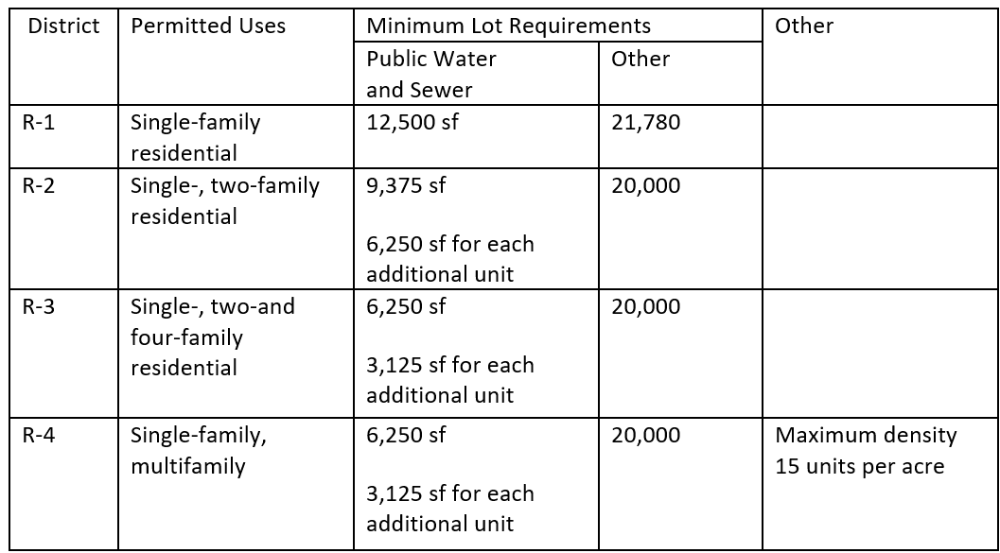
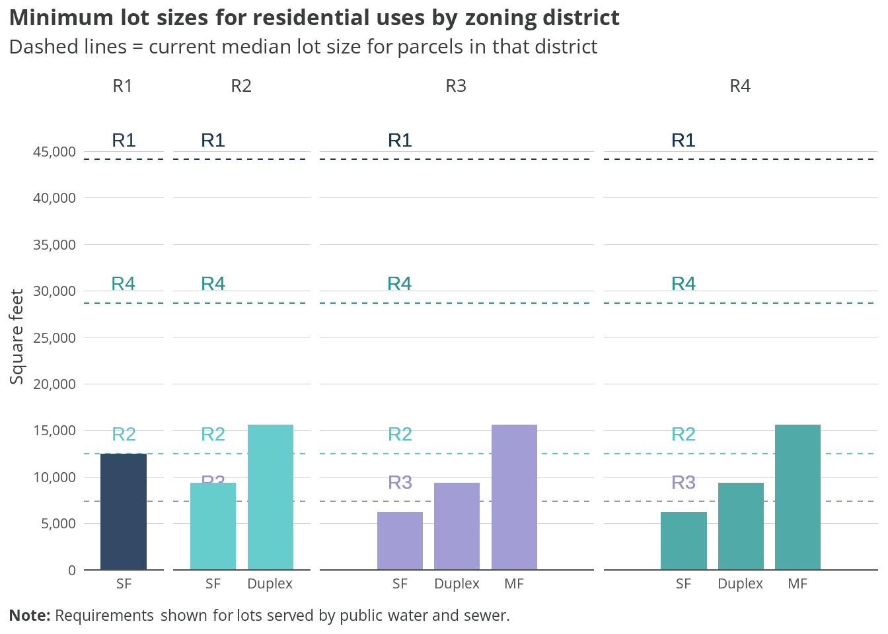
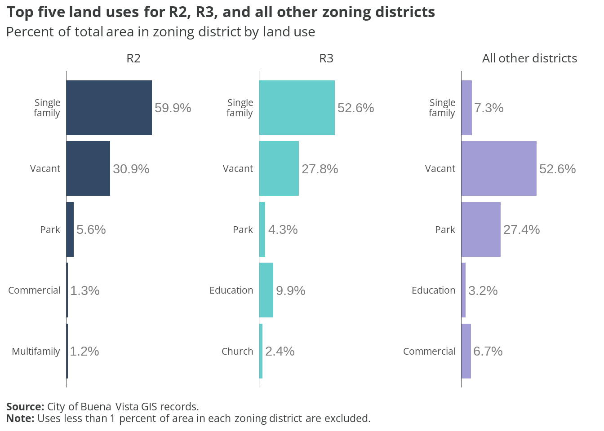
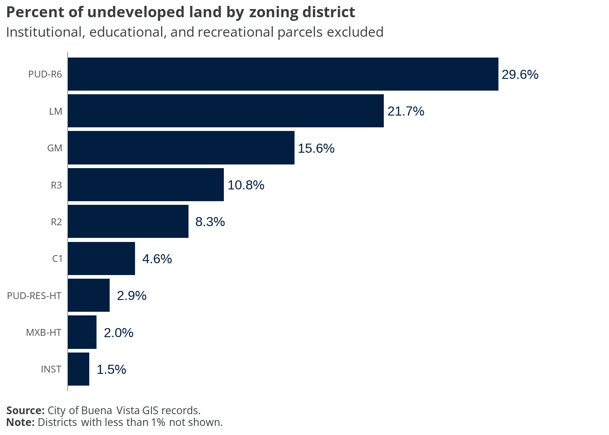
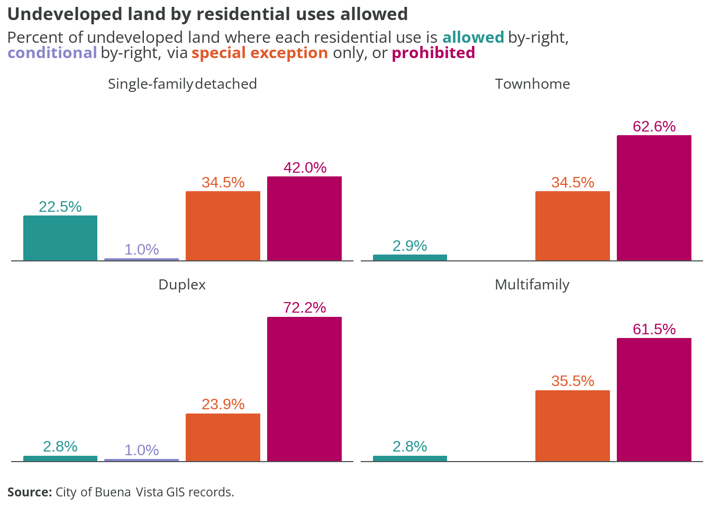

| Zone | Name | Type |
|---|---|---|
| C1 | Conservation | Nonresidential |
| R1 | Low Density Residential | Primarily Residential |
| R2 | Residential | Primarily Residential |
| R3 | Residential Limited | Primarily Residential |
| R4 | Medium Density Residential | Primarily Residential |
| PUD-R6 | Residential Planned Unit Development | Primarily Residential |
| B1 | General Business | Mixed with Residential |
| B2 | Planned Business | Mixed with Residential |
| LM | Light Manufacturing | Nonresidential |
| GM | General Manufacturing | Nonresidential |
| REC | Recreational | Nonresidential |
| MU | Mixed Use | Mixed with Residential |
| MB | Mixed Business | Mixed with Residential |
| INST | Institutional | Mixed with Residential |
| PUD-RES-HT | Planned Unit Development-Residential-Hill Top | Mixed with Residential |
| MXB-HT | Mixed Use Business-Hill Top | Mixed with Residential |
| MUC | Mixed Use Corridor | Mixed with Residential |
6 Buena Vista
This section examines current residential zoning patterns in the City of Buena Vista.
The existing zoning ordinance dictating land use and development was originally written in 1985. It has not been comprehensively rewritten since then. At that time, the city’s population was 6,470—only about 100 people less than its population today.
Since 1985, amendments have been made to the zoning code to address cases and uses not originally considered, but the overall form of the zoning code remains unchanged.
6.1 Zoning districts
Buena Vista’s zoning code includes 17 distinct districts, with five primarily residential zones, eight mixed-use zones that allow residential development, and four nonresidential districts. The residential districts range from low-density R1 to medium-density R4, plus a planned unit development zone (PUD-R6). The mixed-use districts include traditional business zones (B1, B2), specialized Hill Top district development areas (PUD-RES-HT, MXB-HT), and corridor-specific zones (MUC).
The map below shows the base zoning for each parcel in the city. R2 and R3 districts make up the majority of residential land in Buena Vista, primarily in the central and western portions of the city. The Hill Top districts (PUD-RES-HT and MXB-HT) are concentrated in the eastern area, while business and mixed-use districts follow major corridors. Conservation and recreational zones are primarily located along the city’s periphery.
The table below shows the allowances for different residential uses in each zoning district.
| Zone | SF detached | Townhome | Duplex | Multifamily | ADU |
|---|---|---|---|---|---|
| C1 | P | P | P | P | P |
| R1 | A | P | P | P | C |
| R2 | A | P | S | P | C |
| R3 | A | P | S | P | C |
| R4 | A | A | A | A | C |
| PUD-R6 | S | S | P | S | P |
| B1 | C | P | C | S | C |
| B2 | C | P | C | S | C |
| LM | P | P | P | P | P |
| GM | P | P | P | P | P |
| REC | S | P | S | P | P |
| MU | A | A | P | C | P |
| MB | A | A | A | A | P |
| INST | A | A | A | A | P |
| PUD-RES-HT | S | S | S | S | P |
| MXB-HT | S | S | S | S | S |
| MUC | P | P | P | P | P |
Allowance key:
- A = Allowed by-right
- C = Conditional (by-right if additional conditions met)
- S = Special exception (permit application and public hearing required)
- P = Prohibited
Residential use definitions:
- SF detached = Single-family home with no walls shared with other dwelling units
- Townhome = Single-family home with at least one wall shared with other dwelling unit
- Duplex = Building with two separate dwelling units
- Multifamily = Building with three or more separate dwelling units
- ADU = Accessory apartment
Single-family detached homes are by-right in most residential districts (R1-R4) and mixed-use zones (MU, MB, INST), but require special exception approval in planned development areas and are prohibited in conservation zones.
Townhomes are only allowed by-right in R4, MB, MU, and INST districts, with most other zones either prohibiting them entirely or requiring special exception approval.
Duplexes are by-right in PUD-R6 and MU districts, with R1 allowing them conditionally. Most other residential zones require special exceptions for duplex development.
Multifamily developments are by-right in R4 and MB districts only, with most other zones either prohibiting them or requiring special exception approval.
Accessory apartments are conditionally permitted in all residential districts (R1-R4) and by-right in most mixed-use and planned development zones, offering flexibility for additional housing units on existing residential lots.
6.2 Lot requirements
The zoning ordinance also stipulates specific geometric criteria that must be met before properties can be developed into homes. These include minimum lot area, road frontage, setbacks (front, side, and rear), and in some cases structure height.
The chart below shows the base minimum lot sizes for different residential uses in different zoning districts, derived from the “Sec. 630.00. - Table of setbacks.” of the Buena Vista Zoning Ordinance.


Minimum lot sizes vary significantly across zoning districts and housing types. R1 zones require the largest lots for single-family homes, while R4 allows for smaller lots to accommodate higher density development.
On the other hand, PUD and mixed-use districts generally have more flexible lot size requirements to encourage diverse housing types.
6.3 Distribution

The distribution of parcels across Buena Vista’s zoning districts shows that R2 and R3 zones dominate the city’s land use pattern, together accounting for over half of all parcels. These moderate-density residential districts form the backbone of the city’s neighborhoods. Mixed-use and business districts comprise a relatively small portion of total parcels, reflecting their concentrated nature along commercial corridors.
6.4 Land use by district
The chart below shows how land area within the City’s two most common zoning districts is currently used.

Within R2 and R3 districts, single-family residential use predominates, occupying roughly 60% of the land area. Notably, about a quarter of the land in these districts remains vacant or underutilized, suggesting significant potential for infill development. Institutional uses, including schools and churches, occupy approximately 10% of the land area, while multifamily development accounts for a relatively small percentage of these districts.
No “duplex” land use designation
Duplexes are allowed with a permit in R2 and R3 by-right; however, the land use codes currently used by the City do not include a standalone duplex designation. According to the latest American Community Survey estimates, there are fewer than 30 2-unit dwellings in the city. It is possible these properties are included in the “Multifamily” land use code.
6.5 Undeveloped lots

Analysis of undeveloped land shows that a significant portion of Buena Vista’s vacant parcels are concentrated in the R2 and R3 districts. This suggests that future residential development opportunities exist primarily in these moderate-density zones. The conservation district also contains substantial undeveloped land, though development restrictions limit its potential for housing.

The analysis of development potential by housing type reveals a stark contrast in what can be built on Buena Vista’s vacant land. While single-family homes are permitted on nearly 80% of undeveloped parcels, opportunities for other housing types are much more limited. Townhomes and duplexes are allowed on roughly 30% of vacant land, while multifamily development is permitted on less than 20% of undeveloped parcels.
This regulatory framework effectively channels most new residential development toward single-family homes, potentially limiting housing diversity and affordability options.
The maps below show what types of residential uses are allowed across presently undeveloped properties in the city. Parcels with any existing improvements are excluded.
6.6 Takeaways
While Buena Vista’s zoning code includes a variety of districts, including several mixed-use zones, it maintains significant restrictions on housing diversity through both use allowances and lot requirements.
The city’s developable land is heavily concentrated in R2 and R3 districts, but these zones have significant restrictions on housing types beyond single-family homes. With approximately 25% of R2/R3 land still vacant, there’s substantial opportunity to revise these districts’ regulations to allow more housing options.
Current zoning creates a notable mismatch between allowances and actual development — while duplexes are technically permitted (with special exception) in R2 and R3 zones, the city lacks a clear land use designation to track them, and fewer than 30 likely exist citywide.
The code’s treatment of different housing types reveals these hierarchies:
- Single-family homes are by-right in most residential and mixed-use zones
- Townhomes face restrictions in most zones except R4 and mixed-use districts
- Duplexes require special exceptions in most residential zones
- Multifamily is by-right in only two districts (R4 and MB)
The data suggests several opportunities for code modernization:
- Create a specific land use designation for duplexes to better track this housing type
- Expand by-right permissions for townhomes and duplexes in R2 and R3 zones, where most developable land exists
- Consider reducing lot size requirements, particularly in R2 and R3, to enable more efficient use of available land
- Streamline the approval process for diverse housing types by replacing special exception requirements with clear by-right standards
The presence of multiple mixed-use and planned development districts suggests openness to flexible development approaches, but these zones affect relatively few parcels. Consider expanding these districts or incorporating their more flexible standards into the primary residential zones.
These changes would help align the code with contemporary housing needs while maintaining appropriate development standards for the city’s character and infrastructure capacity.